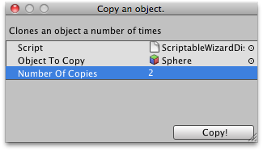

ScriptableWizard.DisplayWizard
public static T DisplayWizard(string title);
Parameters
| title | The title shown at the top of the wizard window. |
Returns
T The wizard.
Description 描述
Creates a wizard.
When the user hits the Create button OnWizardCreate function will be called.
DisplayWizard will only show one wizard for every wizard class.

Simple Wizard window that copies a GameObject several times.
// Simple Wizard that clones an object.
using UnityEngine; using UnityEditor; using System.Collections;
public class ScriptableWizardDisplayWizard : ScriptableWizard { public GameObject objectToCopy = null; public int numberOfCopies = 2; [MenuItem("Example/Show DisplayWizard usage")] static void CreateWindow() { // Creates the wizard for display ScriptableWizard.DisplayWizard("Copy an object.", typeof(ScriptableWizardDisplayWizard), "Copy!"); }
void OnWizardUpdate() { helpString = "Clones an object a number of times"; if (!objectToCopy) { errorString = "Please assign an object"; isValid = false; } else { errorString = ""; isValid = true; } }
void OnWizardCreate() { for (int i = 0; i < numberOfCopies; i++) Instantiate(objectToCopy, Vector3.zero, Quaternion.identity); } }
public static T DisplayWizard(string title,
string createButtonName);
public static T DisplayWizard(string title,
string createButtonName,
string otherButtonName);
Parameters
| title | The title shown at the top of the wizard window. | |
| createButtonName | The text shown on the create button. | |
| otherButtonName | The text shown on the optional other button. Leave this parameter out to leave the button out. |
Returns
T The wizard.
Description 描述
Creates a wizard.
When the user hits the Create button OnWizardCreate function will be called. DisplayWizard will only show one wizard for every wizard class.
public static ScriptableWizard DisplayWizard(string title,
Type klass,
string createButtonName = "Create",
string otherButtonName = "");
Parameters
| title | The title shown at the top of the wizard window. | |
| klass | The class implementing the wizard. It has to derive from ScriptableWizard. | |
| createButtonName | The text shown on the create button. | |
| otherButtonName | The text shown on the optional other button. Leave this parameter out to leave the button out. |
Returns
ScriptableWizard The wizard.
Description 描述
Creates a wizard.
When the user hits the Create button OnWizardCreate function will be called. DisplayWizard will only show one wizard for every wizard class.